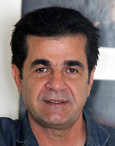

|
|
|
Browsing
Contact Us |
Campaigners |
Face to Face |
Tribune |
Interview |
News |
On the Web |
One Million |
Report
Farsi | Français | German | Italian | Spanish | العربية Also in this section
|

Iranian Rights Advocates Nasrin Sotoudeh and Jafar Panahi Receive Sakharov Prize for Freedom of ThoughtSunday 28 October 2012 Change for Equality:
 The award comes at a time, when Nasrin Sotoudeh has embarked on her second hunger strike in prison to protest pressures by security and prison officials against her and her family, including limitations placed on her visitation with her family and children and a travel ban imposed on her 12 year old daughter, Mehraveh. Political prisoners are often denied due process in the court system only to face other pressures while in detention, that go against minimal rights guarantees provided by Iranian law. The European Parliament News reported further that "nominations come from a political group or at least 40 MEPs. The foreign affairs and development committees decided on the three finalists on 9 October and from these three political group leaders chose this year’s laureate on 26 October." The prize will be awarded 12 December during a ceremony at the European Parliament in Strasbourg. The winners will receive €50,000. Former winners In 2011, the prize went to five representatives of the Arab Spring, in recognition and support of their drive for freedom and human rights. Former winners include Nobel Prize laureates Nelson Mandela (1988), Aung Sang Suu Kyi (1990) and the UN, represented by Secretary General Kofi Annan (2003). The Sakharov Prize for Freedom of Thought honors exceptional individuals who combat intolerance, fanaticism and oppression to defend human rights and freedom of expression. It is named in honor of the Soviet physicist and political dissident Andrei Sakharov and has been awarded annually by the European Parliament since 1988 to individuals or organisations that have made an important contribution to the fight for human rights or democracy. |